Torna alle pagine del docente · PDF: dispensa
2INF 16/11 · Ora 4 · Chi sono: il mio primo sito
Oggi fai il tuo primo sito: la tua home page. La scrivi sul PC, poi la metti su GitHub. GitHub la mette online. Alla fine controlli da solo e dai gli indirizzi al prof.
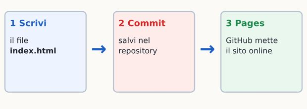
Il tuo percorso: segna ☐ quando finisci
☐ 1 · Capisco: sito, HTML, CSS
☐ 2 · La home page: un file index.html nel Blocco note
☐ 3 · GitHub: il repository mio-sito
☐ 4 · Online: il sito ha un indirizzo
☐ 5 · Controllo: guardo se è tutto giusto
☐ 6 · Gli indirizzi: li do al prof
☐ 7 · Consegna: UN Documento
Le regole per tutti
1 · Il repository si chiama mio-sito. Lo stesso nome per tutti.
2 · Gli indirizzi sono uguali per tutti: https://github.com/NOMEUTENTE/mio-sito e https://NOMEUTENTE.github.io/mio-sito/.
3 · La home page ha: i tuoi dati, le competenze, gli hobby e la galleria fotografica.
Non installi niente. Usi: Browser, Blocco note, Esplora file, Classroom nel browser, Documenti Google, GitHub nel browser e il tasto Stamp. In ogni passo trovi la scritta Strumento. Hai poco tempo? Il foglio «Documento Ora 4 semplificato» ti dice che cosa controllare.
1 · Capisco: che cos'è un sito
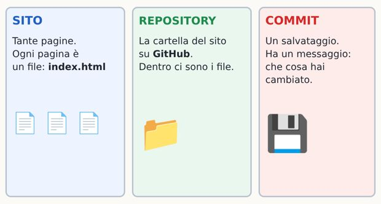
Un sito è un gruppo di pagine. Ogni pagina è un file. La prima pagina si chiama index.html ed è la home page.
HTML5 è il linguaggio delle pagine. È un markup: dice che cosa c'è nella pagina. Si scrive con i tag. Ogni tag ha una apertura e una chiusura: <h1>Ciao</h1>. Sulla lavagna il tag era <titolo>: «titolo» era un nome generico. Il tag vero è <h1> per il titolo della pagina.
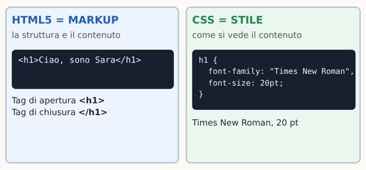
CSS è lo stile: dice come si vede la pagina. Esempio: il titolo in Times New Roman, 20 pt. Il CSS si mette in due modi: FILE (un file separato style.css) oppure EMBEDDED (dentro la pagina, nel tag <style>).
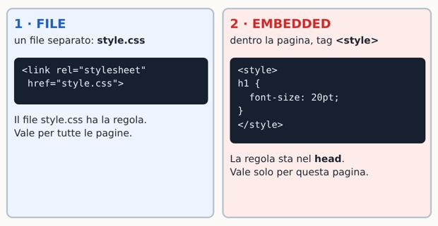
Oggi usi il modo EMBEDDED: un solo file, index.html.
Parole nuove
| Parola | Che cosa vuol dire |
|---|---|
| HTML | il linguaggio per scrivere le pagine web (markup) |
| tag | una parola tra < e >, per esempio <h1> |
| CSS | lo stile: colori, caratteri, dimensioni |
| repository | la cartella del tuo sito su GitHub |
| commit | un salvataggio, con un messaggio che dice che cosa hai cambiato |
| GitHub Pages | il servizio che mette il tuo sito online |
Che cosa NON metto nel sito. Il sito è pubblico: lo può vedere chiunque. Non metti password, indirizzo di casa, numero di telefono, foto di persone. Usa solo il tuo nome, senza cognome. Per esempio: Sara.
2 · La home page: un file index.html (circa 20 minuti)
Fai il sito sul PC, nel Blocco note. Poi lo metti su GitHub.
Passo 1
Strumento: Esplora file. Sul Desktop premi il tasto destro. Premi Nuovo, poi Cartella. Scrivi il nome mio-sito.
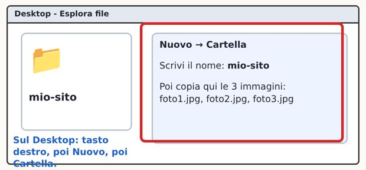
Passo 2
Strumento: Blocco note. Apri il Blocco note. Cerca il nome nel menu di Windows, il bottone in basso a sinistra. Ricopia l'esempio qui sotto. Al posto di Sara scrivi il tuo nome. Cambia competenze e hobby con i tuoi.
<!DOCTYPE html>
<html lang="it">
<head>
<meta charset="utf-8">
<title>Chi sono</title>
<style>
body { font-family: Arial, sans-serif; background-color: lightyellow; }
h1 { font-family: "Times New Roman", serif; font-size: 20pt; color: navy; }
img { width: 200px; }
</style>
</head>
<body>
<h1>Ciao, sono Sara</h1>
<p>Ho 14 anni. Studio informatica.</p>
<h2>Le mie competenze</h2>
<ul>
<li>so scrivere una pagina web</li>
<li>so usare GitHub</li>
<li>parlo italiano e inglese</li>
</ul>
<h2>I miei hobby</h2>
<ul>
<li>il calcio</li>
<li>la musica</li>
</ul>
<h2>La mia galleria</h2>
<img src="foto1.jpg" alt="Il mio gatto">
<img src="foto2.jpg" alt="Il mio pallone">
<img src="foto3.jpg" alt="Il mio disegno">
</body>
</html>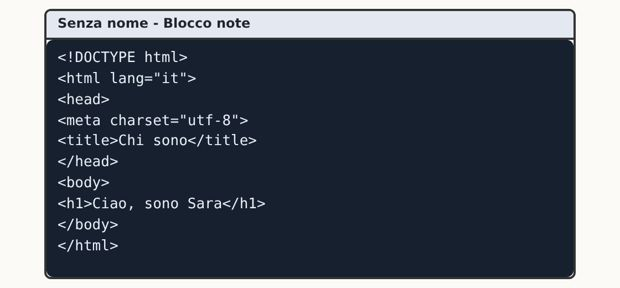
Passo 3
Strumento: Blocco note. Premi Ctrl+S. Scegli la cartella mio-sito sul Desktop. Nel campo Nome file scrivi index.html. In Salva come scegli Tutti i file. In Codifica scegli UTF-8. Premi Salva.
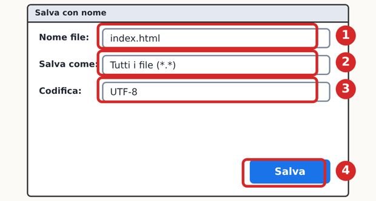
Passo 4
Strumento: Browser. Cerca 3 immagini: un animale, un oggetto, un disegno. Premi il tasto destro, poi Salva immagine con nome. Salvale nella cartella mio-sito con i nomi foto1.jpg, foto2.jpg, foto3.jpg. Non usare foto di persone.
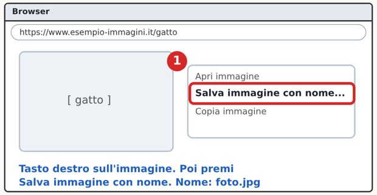
Passo 5
Strumento: Esplora file. Apri la cartella mio-sito. Fai doppio clic su index.html. La pagina si apre nel browser: vedi titolo, competenze, hobby e le 3 immagini?
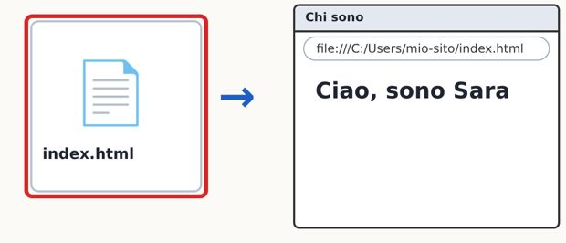
Non vedi le immagini? Controlla i nomi: foto1.jpg, foto2.jpg, foto3.jpg, nella stessa cartella di index.html.
3 · GitHub: il repository mio-sito
Git ricorda tutte le versioni dei tuoi file. GitHub è il sito dove tieni i file su internet. Un repository è la cartella del tuo sito su GitHub. Con Lazarus hai già usato Git.
Passo 1
Strumento: GitHub nel browser. Apri github.com ed entra con il tuo account. Premi il bottone + in alto a destra. Poi premi New repository.
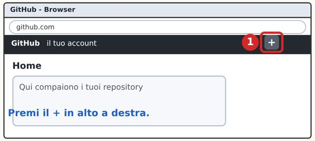
Passo 2
Strumento: GitHub nel browser. Nel campo Repository name scrivi mio-sito. Scegli Public. Premi il bottone verde Create repository.
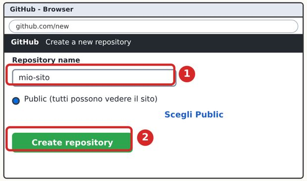
Il nome è mio-sito per tutti. Hai già un repository mio-sito? Usa quello.
Passo 3
Strumento: GitHub nel browser. Nel repository premi Add file, poi Upload files. Scegli da mio-sito i 4 file: index.html, foto1.jpg, foto2.jpg, foto3.jpg. Nel campo del messaggio scrivi Aggiungo la home page. Premi Commit changes.
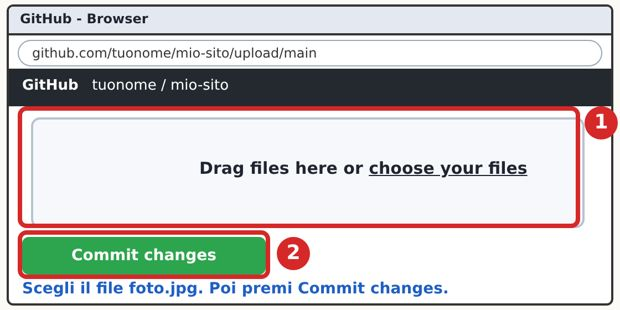
Un commit è un salvataggio con un messaggio. Un buon messaggio comincia con un verbo. Bene: Aggiungo la home page. Male: modifiche.
4 · Online: GitHub Pages (circa 5 minuti)
Passo 1
Strumento: GitHub nel browser. Nel tuo repository premi la scheda Settings, in alto. Poi nel menu a sinistra premi Pages.
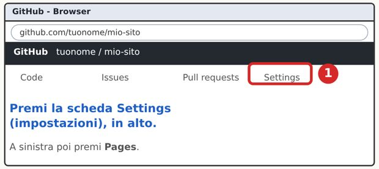
Passo 2
Strumento: GitHub nel browser. Sotto Branch scegli main. Premi Save. Aspetta uno o due minuti.
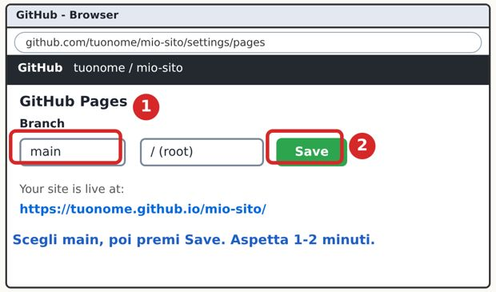
Passo 3
Strumento: Browser. Ricarica la pagina Pages. Compare il tuo indirizzo. Premilo: è il tuo sito online.
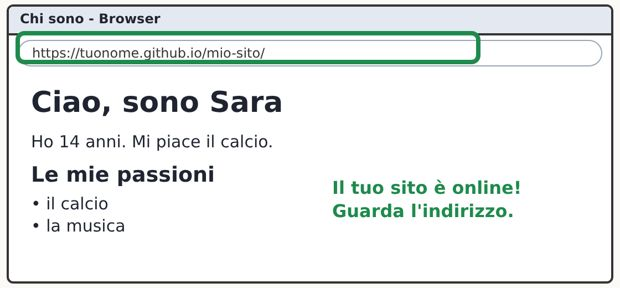
Compare un errore 404? Aspetta due minuti. Poi premi Ctrl+F5.
5 · Controllo: guardo da solo se è tutto giusto
Passo 1
Strumento: Browser. Apri il tuo sito dall'indirizzo https://NOMEUTENTE.github.io/mio-sito/. Controlla ogni riga di questo elenco. Se una riga non va, torna alla parte indicata.
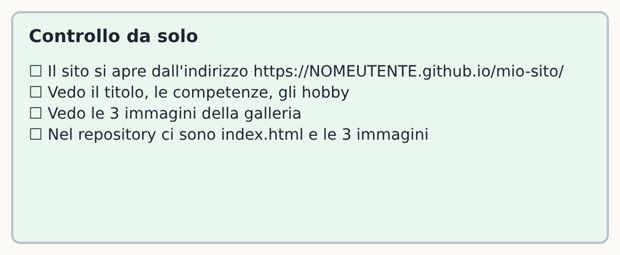
Il sito non si apre? Guarda la parte 4. Non vedi le immagini? Guarda la parte 2. Nel repository mancano file? Guarda la parte 3.
6 · Gli indirizzi: li do al prof
Questi sono i tuoi 2 indirizzi (con il tuo nome utente nel campo in alto):
https://github.com/NOMEUTENTE/mio-sito
https://NOMEUTENTE.github.io/mio-sito/
Il prof apre i tuoi 2 indirizzi e controlla il codice e il sito. Gli indirizzi si chiamano URL.
Passo 1
Strumento: GitHub nel browser. Apri il tuo repository. Clicca la barra degli indirizzi in alto. Premi Ctrl+C: l'URL del repository è copiato. È fatto così: https://github.com/NOMEUTENTE/mio-sito.
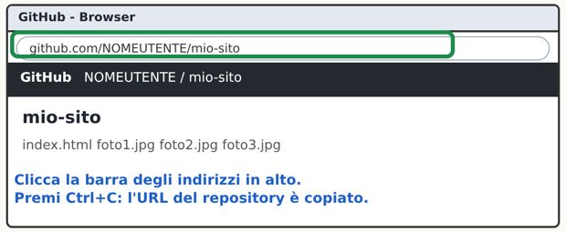
Passo 2
Strumento: GitHub nel browser. Premi Settings, poi Pages. Sotto Your site is live at seleziona l'indirizzo. Premi Ctrl+C: l'URL del sito è copiato. È fatto così: https://NOMEUTENTE.github.io/mio-sito/.
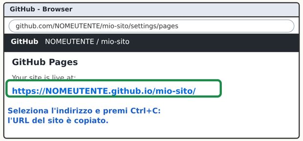
7 · Consegna: UN Documento
Consegni UN solo Documento. In cima ci sono il tuo nome e cognome e i 2 URL. Così il prof può aprirli.
Passo 1
Strumento: Classroom nel browser. Apri il compito di questa ora. Nel riquadro Il tuo lavoro premi Aggiungi o crea. Poi premi Documenti.
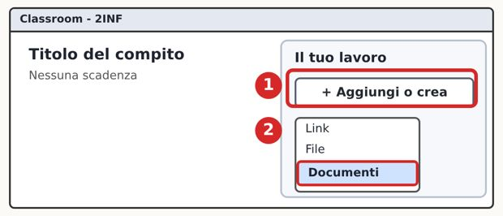
Passo 2
Strumento: Documenti Google. In cima al Documento ricopia le 3 righe qui sotto. Per esempio: Sara Rossi. Al posto di NOMEUTENTE incolla o scrivi il tuo nome utente di GitHub. Il repository è sempre mio-sito.
Nome e cognome: ______________________ URL del repository: https://github.com/NOMEUTENTE/mio-sito URL del sito: https://NOMEUTENTE.github.io/mio-sito/
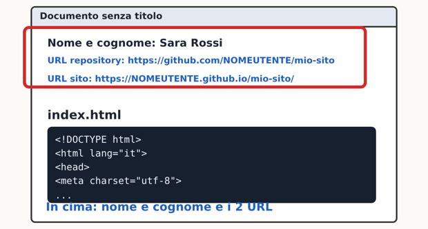
Passo 3
Strumento: Tastiera, tasto Stamp. Apri il tuo sito nel browser. Premi il tasto Stamp, oppure Windows+Maiusc+S. Nel Documento, sotto i due URL, premi Ctrl+V. Sotto la foto metti la riga Il mio sito online.
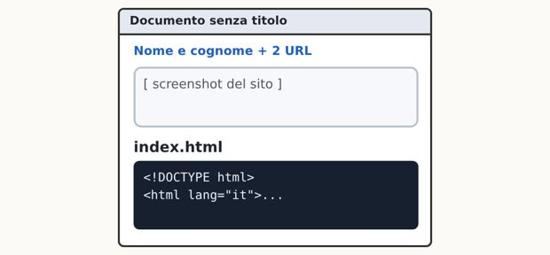
FAI LO SCREENSHOT 1 di 1
Deve vedersi: il tuo sito aperto nel browser. L'indirizzo in alto si legge. Si vede tutta la finestra.
Fai così: premi Windows+Maiusc+S (oppure Stamp). Poi vai nel Documento, sotto i due URL, e premi Ctrl+V.
Passo 4
Strumento: GitHub nel browser. Nel Documento scrivi il titolo index.html. Apri il file index.html nel repository su GitHub. Premi Copy raw file, in alto a destra.
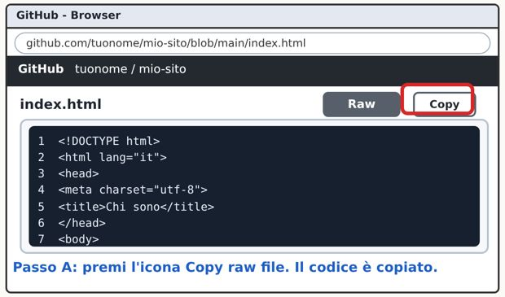
Passo 5
Strumento: Documenti Google. Torna al Documento. Clicca sotto il titolo. Premi Ctrl+Maiusc+V: il codice compare senza colori strani.
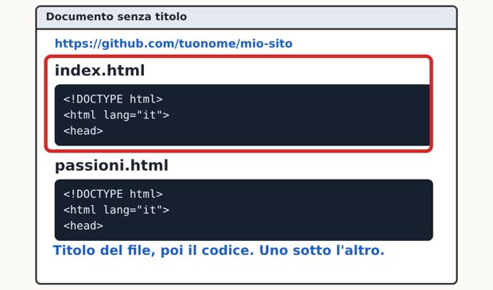
Passo 6
Strumento: Classroom nel browser. Torna nel compito su Classroom. Nel riquadro Il tuo lavoro deve esserci il Documento. Premi il bottone blu Consegna. Se compare una finestra, premi ancora Consegna.
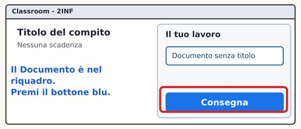
Non riesci con il Documento? Puoi consegnare uno ZIP: nel repository premi il bottone verde Code, poi Download ZIP. Nel compito premi Aggiungi o crea, poi File.
Hai finito prima? Chiedi all'assistente il prossimo passo.